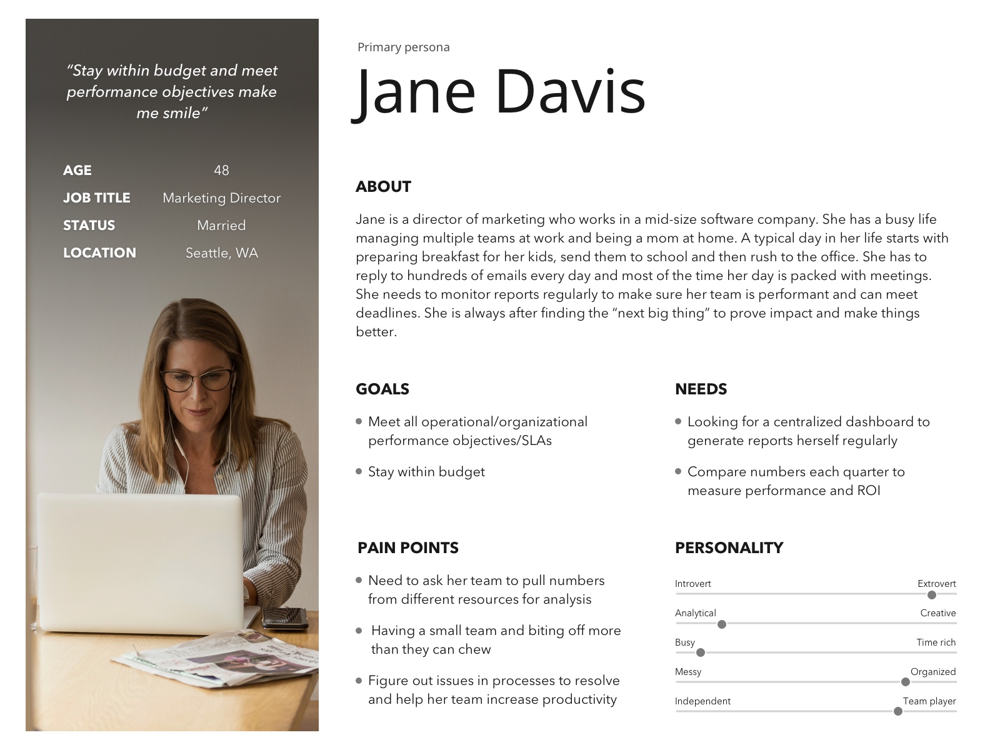
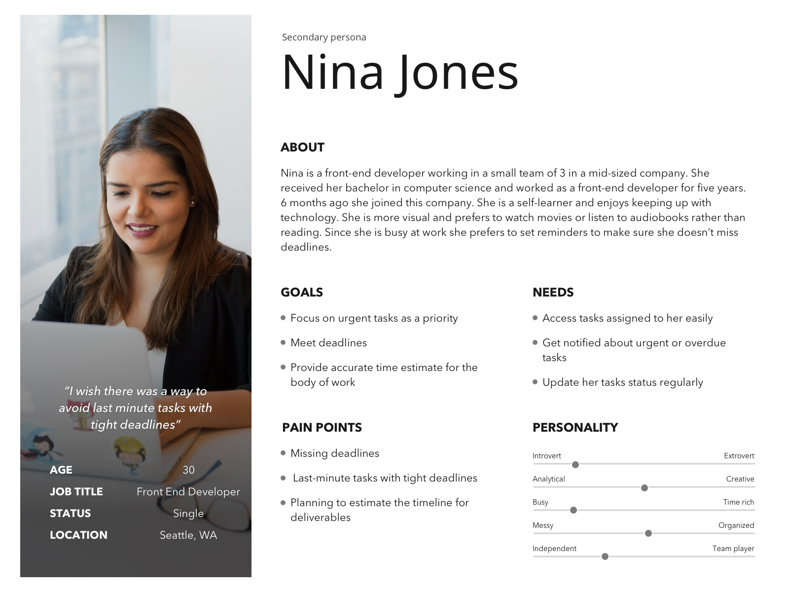
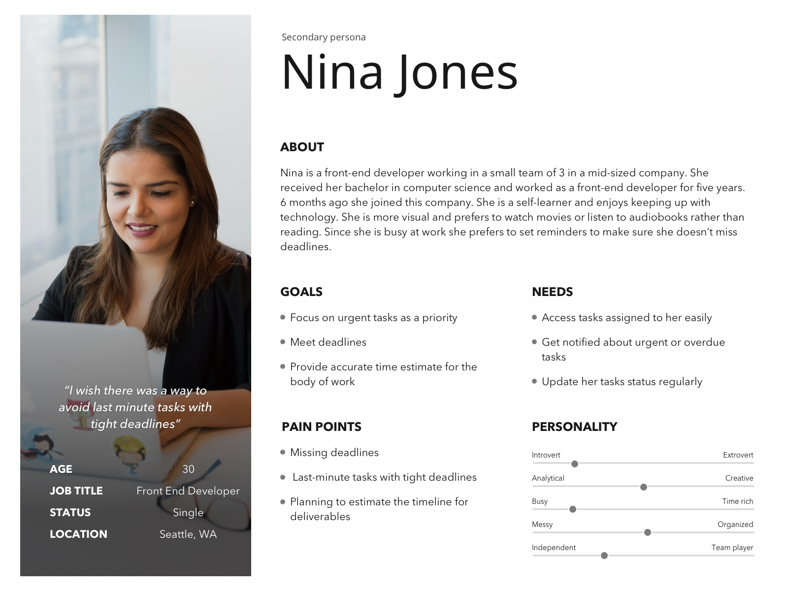
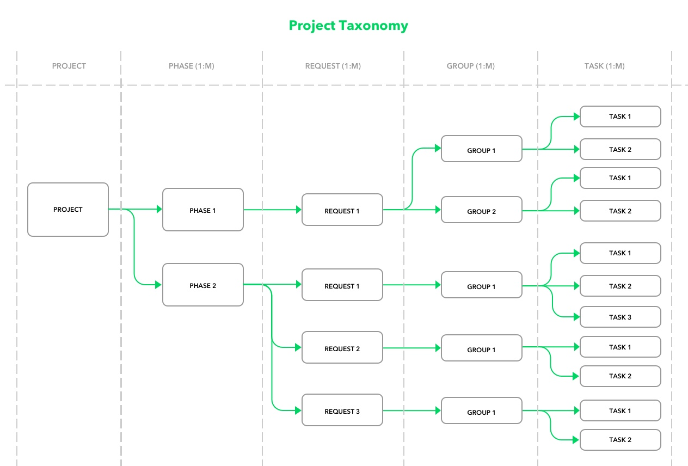
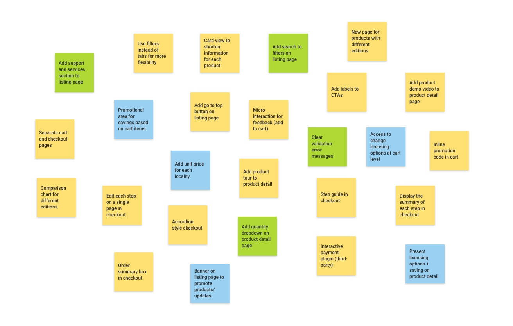
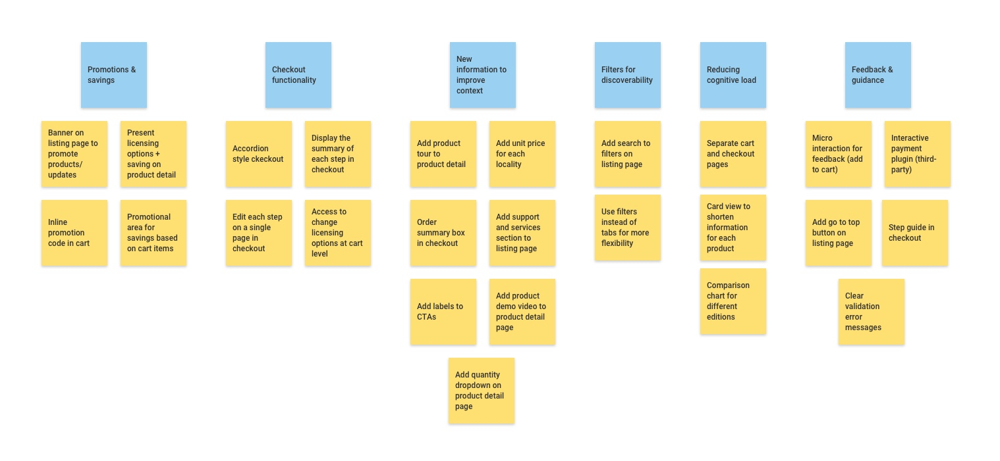
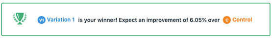

Hi! I'm Elnaz

Hi! I'm Elnaz

I'm a UI/UX designer with 7+ years of experience in design.
I strongly believe in the power of research and emotional design to make products people will love. The best part of my job is to discover customer pain points and challenge myself to create an engaging experience. I love the collaborative work environment and excited about upcoming changes to the digital world. I’m currently working remotely at Quest Software.
Oasis 2 (O2) is a demand generation & content management system (CMS) in-house web application product for Quest.com & Oneidentity.com websites. Besides its many features, It is used to manage projects and assign requests associated with them to team members.
Poor visibility on project timeline and progress of work, made project managers keep an Excel sheet to manually keep track of their work. Delayed projects and confusions for creating the right type of project for certain business operations, created an urgent need to improve the process and come up with a new feature for this product.
We designed a new feature to assist project managers to stay in control again by keeping everything related to a project in one spot. It helped all the team members working with this product to avoid confusion, last-minute requests, and escalations. Here are some of our high-level goals:
Product Designer
Jun-Sep 2019
Elnaz Doostdar, Diana Spencer, Diane Chung, Gopal Kamaraj, Sharif Naqib
Sketch, Frontify, Zeplin, InVision
During the research phase, I worked closely with our business analyst to capture issues based on existing user behavior. I contributed to stakeholders and user interviews. I also conducted a competitive analysis and took the lead in creating an affinity mapping. Plus, I created personas to make sure we are designing for the right user group and mapped the user journey for each persona.
I moderated brainstorming sessions with our team and was responsible to synthesize and analyze data. I then designed the user interface for the project planner using Sketch and created an interactive prototype in InVision for user testing.
During the evaluation phase, I moderated usability testing sessions and was in charge of analyzing the data and deriving design recommendations accordingly. I worked with our BA to create a reporting area in the product to provide further data visualization to our stakeholders and project managers using Telerik Kendo UI library chart components to create interactive prototypes.
I teamed up with our business analyst and project manager to understand the main issues team members having using our current product feature to manage projects and requests.
We created and sent out a short open-ended questionnaire to 10 users in our company with different roles. Our main goal was to capture the main issues of each group and craft our personas based on their needs accordingly.
We then conducted semi-structured interviews with these users to expand our knowledge further and define the areas we need to focus on based on their impact on the team’s day-to-day jobs.
Here are some of the main findings based on roles:

Poor visibility on:

Based on our interviews and the information we gathered, I created an affinity diagram to categorize the problems so that we can brainstorm solutions the next time we regroup with the rest of the team.

I looked into the existing products on the market to gather ideas about how other products are handling similar issues.
From the analysis I learned that:
After analyzing and discussing our research results, I created the following personas to help guide our solution.
 

At this stage, we decided to focus on our primary personas journey maps as the impacts of improving their experience were critical to the project's timeline. We postponed enhancements to our secondary persona’s user experience to another phase.


After several brainstorming sessions with the team, we decided to build a new feature for our product. We called it a project/request planner initially. We came up with a couple of concepts referring back to our user’s needs to make sure we address their pain points.
I designed interfaces for these concepts using Sketch. Due to time constraints, I skipped creating wireframes. Mockups for “Request Types” pop-up are created by my colleague Diana. We tried to use the same style guide we have for this product in our new design to maintain consistency.
We broke down projects into two categories:
In this concept, we added a section for projects in the request type pop-up (this pop-up is already in use for creating requests)
We included tooltips to explain what each project type involves and help to clarify different types of projects to project managers.

Once the user picks a project type, they will be taken to this page where they see 4 tabs to add required, suggested, new, or optional tasks to the project. The goal is to have interview sessions with each business unit to find out the types of tasks required for each of these requests and automatically load them into the page. That way the chances of missing a task will be reduced for project managers.

Click on each of these requests will open a pop-up to create the request. Once the request created it will be added to the project and the + icon will turn to a checkmark to indicate that the request has been added successfully.
The “New” tab will be there in case any additional tasks needed during the execution of the project. Eventually, we want to remove this tab as we learn how things work overtime and include them in the suggested tab section instead.
Users can find and include any existing requests for a new project through this section.
The idea here is to include SLAs into requests to indicate how long each task will take. This can help better time estimate. I also added requests into groups to show the order of the tasks. Requests within a group can start at the same time whereas all requests within a group should be completed before moving to the next group. I added a percentage progress bar along with some circle progress charts to display where we are in the creation of the project.
All the other steps are the same as concept 1.

I’ve worked closely with our BA and stakeholders to capture the data we need to pull in to reports and came up with 4 types of reports.
We added a description for each report type to help to pick the right one for our users. I then started to create prototypes using Telerik Kendo UI components to show the charts. At this point, we wanted to validate the datasets of the reports with directors and stakeholders before we proceed further with the project.
Parallel to designing the user interface for the new project planner, we conducted a brainstorming session with our users to understand the best way to categorize requests and project types in the “Request Type” pop-up.
I took the lead to organize and analyze the result:

Diana created the final pop-up mockup for request/project types based on our card sorting session result.
We presented our ideas to the project managers and stakeholders of the product. We walked users through our concepts and explained the flow. At this stage, our goal was to validate our concepts and make sure we were on the right track.
After presenting each concept, we asked the users how effective they think this feature would be. We also ask them what are the functionalities that they like and dislike.
Here is a summary of the feedback we collected:
Loading requests based on project is great because it helps to have a default template to start working with
Users liked the description for each request type since it will help they think deeper to see if a specific request needed for the project they are managing
Adding existing requests to the projects was yet another thing that can eliminate the manual work of creating them
They also liked the plus and checkmark icons to quickly see what has been created and what’s not
They didn’t like the tabs. They mentioned tabs will force them to go back and forth to remember what they did in other sections
This concept still doesn’t help them to see the progress of the project at a glance
It also misses SLAs which needs to be there to help calculate the project timeline
They liked the clean view of cards as they can scan the whole view easier.
They liked the progress circles at the top which gave them a quick summary of the SLA and requests
They found different lines in the layout confusing
The overall progress of the project is missing
They were concerned about the order in which the group tasks need to start. There might be some scenarios where two groups should work in parallel.
Users really liked the idea of having a reporting dashboard linked with the new project planner and the request queue data. The next step was for our BA to gather requirements for the charts and me coming up with what would be the best chart type to visualize data using Kendo components.
From the information we gathered during our review sessions with our users, we decided to go ahead with the second concept for the project planner and further refine the design based on what we learned. Following are the next round of mockups that are ordered by the experience flow:
Our user starts the journey by clicking on the “Add Request” button in the request queue.

A pop-up with different request types categorized based on the brainstorming session we had with the team opens for user selection

Once they pick a request type under guided projects they will be taken to this page where all the required and suggested requests are laid out into different phases. I got rid of the tabs and incorporated new and existing requests into the phases.
Each phase will have an estimated SLA and tasks can be moved around using drag and drop functionality. Project time will be re-calculated automatically if any of the following changes happen:
I included progress circle charts that will show important data about the progress of the project and removed the progress lines to give it a less line heavy look. On the side note, we also wanted to track and see how many of our users will adopt this new feature to create all the required or suggested requests in a guided project through progress circle's data.
Any project material such as documents can be also attached to the project to keep everything in one place. Users will also have the ability to add team members as followers to the project.
Once the user clicks on a “+” button a pop-up opens to create the request.

Once the request created it will be added to the card with a link to access the details and the icon will turn into a checkmark. An attachment icon will indicate that the card is associated with a request and can be unlinked in case the wrong request has been created or attached.

Under each phase, I added a button to enable either adding a new or existing request to a phase to address one of the user's pain points to go back and forth to see different requests in a project.

If the user clicks on add new option then the familiar request type pop-up appears to select a request type.
If the user chooses to include an existing request, then the pop-up for finding the request will display.

The pop-up will let the user find and add an exiting request.
Request & task manager section to display all the requests in one view. I added the ability to filter based on the criteria our secondary persona stated to see the requests that are due or have alerts because of being delayed. The project also includes the commenting ability and sending an email notification about status changes.

If the user wants to unlink a custom request (not a required nor a suggested request) from a card, a confirmation tooltip will appear.
If the user chooses to unlink request then the card will disappear from the phase.
If the user chooses to unlink a request from a required card, then the card will remain and the request will be unlinked.
Once a request unlinked from a required request, the checkmark icon turns back to a plus sign.

If the user chooses to create a non-guided project then an empty template of the new design will appear, giving the user full flexibility to add cards.
I worked with the stakeholders to define the report datasets for each of the following reports we defined:

The first chart displays the number of accepted (started/backlogged) and done requests based on the date range selected.
I picked pie charts (at the bottom) to display data for completed requests. The goal is to see how many requests have been completed earlier or later than the actual SLA timeline for better estimation. We also included a range of days to provide a better understanding of the number of days a request has started earlier or later.
After many trial and error prototypes using different chart types, I chose a bubble chart to let the user drill down further to see the type of request for each pie chart to explore more detailed information.
The first bar chart shows the number of accepted and done tasks based on the date range selected. From here the user can drill down further and see the type of tasks completed on the second bar chart. The goal is to see if there is a balance between the tasks that are accepted and delivered.
The pie charts show the same type of data as the request analysis report for SLA at task level which also lets the user drill down further to see the task types by the number of days they are completed earlier or later than the SLA timeline.

This chart shows the number of tasks each team member has by their status along with the number of days scheduled to complete the task per task status.
The main purpose is to provide a visual way to the users in terms of who has the bandwidth or overloaded with tasks when assigning tasks to team members.

This line chart shows the number of created and done requests based on sprint(s) selected for an Agile Team.
The stacked bar chart shows the number of created requests before and in a sprint that did not get done for an Agile Team. The goal for these charts was to do a better job in sprint planning.
This chart shows the requests which were assigned to a project versus those requests which were not assigned to a project. The purpose is to identify orphan tasks and make sure they are linked to a project using the new project planner.
I also created an interactive prototype of this new product feature using InVision.
To better show the drag and drop functionality I worked with developers to implement the functionality using code to communicate the experience easier when showing it to the users:

We presented the prototype to the users and conducted test sessions using the following tasks:
Task 1: Create a guided project for a new product
Task 2: Find and add a new trial request to the project
Task 3: Add a new trial request to phase one
Task 4: Add an existing request to phase one
Task 5: Unlink the request from the "product admin add" card
Task 6: Filter request table based on the requests that are due this week
In general, users liked our design. However, they identified several problems:
Based on the results of the usability testing, I applied final enhancements using Sketch to the following areas:

I’ve included the status of the request in cards.
Users can define if a request should start earlier or later that the system's calculated-date. The number of days can be defined as well. This function will be used to stagger and streamline work in the same phase.
I’ve also made the cards that were in idea mode to have a light grey background color and the requests that are done or canceled to fade out. Plus, I added a little color-coded tag to indicate if the request is adding to the scope of the project (ASP red tag). I defined the same style tags to display other scenarios such as new, urgent, etc.
I’ve also included additional options to the filter dropdown per user's feedback so that they can apply more criteria if they need to.
We created an information architecture and conducted several training sessions for the team to introduce this newly added feature to our product.
The three main entities are Project, Requests, and Tasks. With guided projects, we are introducing a new concept called Phase.
To measure the result of our work, we defined a set of metrics for evaluation such as:
Although we launched this product feature 3 months back and it is still too early to evaluate its full impact but we noticed that project managers are saving an average of 15% of their time when creating a project using guided projects. Plus:
Based on the data and the feedback from our users, we came up with a list of changes that we can apply to the product to enhance this feature:
Ability to filter cards similar to the request/task table
Onboarding tutorials for the planner (we are in the process of creating a knowledge base section for this)
Work closely with business units to remove unnecessary suggested requests
Incorporate custom requests into the suggested section to avoid manual work
Add micro-interactions to the checkmark icon to indicate the user completed the task successfully and encourage them to continue
Use a timer concept to track time spent on a particular task to improve SLA estimates
Optimize request creation forms to have fewer fields to accelerate the process
Send notification email daily for urgent or overdue tasks to engage users even more
Make the platform responsive to let the users access an overview of their tasks on the go
Reward team members based on the timely projects and requests they have completed
Quest customers have a hard time finding the right product licensing and savings suites their needs. They find the content on the e-commerce website confusing. A single mistake during the purchase can lead to calls to sales and affect missing savings they could make during their online shopping.
We redesigned the website to guide choosing the right product that fits the expectations of our customers so that they can benefit from promotions during the purchase journey without having to call sales and avoid extra work for the return process. Here are some of our high-level goals:
UX/UI Designer
Aug-Nov 2018
Elnaz Doostdar, Diana Spencer, Sarah Scobie, Beata Kushner, Sharif Naqib
Sketch, Frontify, InVision, Zeplin
During the research phase, I worked closely with our data scientist to capture issues based on existing data in Google analytics. I contributed to stakeholders and user interviews. Plus, I did a literature review to understand e-commerce best practices and created a task analysis based on research results.
I created low-fidelity wireframes based on our findings in the research phase and moderated user feedback and brainstorming sessions. I then designed the user interface for the entire website using Sketch and created a prototype using InVision.
During the development phase, I was in charge of handing over UI specifications to our third-party vendor using Zeplin. I also contributed to UI testing and provided feedback to developers.
During the evaluation phase, I moderated usability testing sessions and was in charge of analyzing the data and deriving design recommendations accordingly.
I started my journey by using the platform with fresh eyes to have a deeper understanding of the current flow and potential areas of improvement.

Following are some of my initial findings:
Initially, I started by looking at iPerception survey results that we conducted last year at the end of the shopping journey. My goal was to capture both negative and positive feedback from customers to start brainstorming ideas for improvements.

Main findings in the survey include:
The survey also made it clear that 100% of our participants were using a desktop to browse or purchase our products. This made us redefine our priority to design for mobile first and put more effort to focus on desktop design.
To better understand our customers and their issues, I took the lead to conduct several semi-structured phone interviews with the sales team to collect direct input from our customers. Following are some of the main findings (highlighted items are overlapping with survey result) :
I couldn’t tell the difference between RemoteScan enterprise and RemoteScan enterprise user edition, I had to call sales to get a better understanding of the features to make a decision.
Besides, we had a few phone interview sessions with different business unit stakeholders. Our primary goal was to understand the business needs and how we could leverage them with our customer needs and kill two birds with one stone. Here are some of the concerns and needs we identified:
Metrics show over 50% of customers purchasing RemoteScan on shop enter from a generic RemoteScan buy page that does not provide any product content or comparison. We need a solution for this within the shop to insure a clean and informative customer journey to purchase.
I looked into studies that focus on all aspects of designing a smooth checkout user experience from Baymard Institute. This would help me learn from industry mistakes and apply best practices to my design.
Auto-update quantity dropdown as soon as it changes and allow “quantity 0” as a way to delete products
Optimize the number of form fields to avoid checkout abandonment
Minimize the amount of typing by auto-filling form fields & eliminate typos
One page with accordions along with accordion steps collapsing to summaries can help ease of review and edit of order information in checkout
Gain trust by visually satisfying customers security perception of a secure payment
Based on the data we collected we created a task analysis for each customer journey to better understand customer pain points when shopping a software online through several channels.

As a team, we conducted a design-studio workshop online to come up with as many ideas as we can to solve existing issues. We discussed our ideas afterward and offered critique to each other’s ideas. Similar color notes belong to an individual team member.
I then created an affinity diagram based on our ideas:
I created the following mid-fidelity wireframes using Sketch to share with the team and potential users. At this stage, my primary goal was to focus on the flow and the functionalities rather than visual design.

Hero area displays any new releases or promotions. Customers can filter or search the list to find products. Card view layout used to reduce cognitive load on users for quicker discovery.
Once customers land on this page they can watch a demo about a product or view features on the tour section if they are not ready to buy yet. Key information is shown in a separate paragraph for better clarity.
I've added a dropdown for the licensing option and tagged the recommended option using a different style.

If the product has different editions the user will land on this new page which includes a comparison chart to show different functionalities come with each edition. The goal is to provide a faster way to choose a certain edition based on needs.
I ran an split campaign previously on marketing site using this matrix and got positive result as follows:
Once products are added to the shopping cart, customers would land on this page where they can see the summary of the items they have in the cart and also any additional savings they may make based on their items at the top section.

On the checkout page, customers can clearly see how many steps involved in completing their purchase along with a summary of their order. Step 1 will ask for their shipping address.
In the second step, customers will enter their payment information. Based on my literature review adding a padlock icon along with a different background color will improve the security perception of the customers and will build trust. I also recommended an interactive plugin for credit card information to avoid errors while inputting the card details.

In this step, customers will review their orders and need to accept the terms and conditions to place their orders. I got rid of the summary box at this stage thinking they have all the information on previous steps present on the page at this point.
I created a click base prototype in Frontify to evaluate the flow. During each evaluation session with users, I explained the task scenario and asked them to speak out loud while going through the flow. I also asked them a few follow-up questions and encourage them to provide feedback.
I've also presented the wireframes to developers and walked them through the process to make sure what we design is feasible to implement. They provided great insights that made me rethink some of the functionalities based on platform limitations and effort required for customization.
Based on the feedback I received I created the following design recommendations:


I created high-fi mockups using a mini style guide from Quest design library (Sketch symbols) applying the recommendations I captured from our evaluation session. I also took the lead to create a prototype for our next revision using Frontify.


Similar to our previous user testing session, I conducted several moderated usability testing sessions with some of our customers. Here are some additional feedback and revisions accordingly:


Customers found it hard to change the filters while scrolling down the listing page. I made the filter area fixed on the page to make it always available to them while scrolling.
Customers ignored the information related to quantity limitations or other selling conditions regardless of having them in a separate paragraph. Based on the principle of proximity (Gestalt theory) I put this information right below the items they related to.

Most customers ignored the license guide link to view additional information about licensing options & savings and therefore missed the savings. I created a section on the page to display all the options and put the action button below each option to grab their attention.


Customers tried to add multiple editions to the cart and taking them to cart page after adding the item to the cart made them frustrated. I created a dropdown button instead of a default button with the option of:
Or


Since I used Sketch to create all the mockups for this project I imported all of them to Zeplin to hand over the CSS specs to developers along with the final prototype.

The redesign of Quest e-commerce website had a positive impact on the checkout experience and content organization in general. It helped:
However, the conversion rate has not been significantly increased which means we have more things to do. Here are some ideas for future phase improvement:
Quest website hosts more than 100 products not only on the marketing website but also on other domains such as e-commerce, support, community, and partners platforms. Consistent style is an essential factor across all domains to maintain shared user experience and branding.
Building a responsive pattern library as a collection of UI elements that can be reused across all domains. The library will create a solid framework to communicate design standards to everyone who touches Quest domains.
UX/UI Designer
Jan 2016 - Current (ongoing)
Sketch, Adobe Photoshop, Frontify, Hand-Coded Prototypes, Zeplin, Visual Web Optimizer (for user testing), OptinMonster
Whether creating a UI pattern from scratch or redesigning an existing pattern to enhance the user experience, It is important to comply with best practices and identify standards via research. Following are some of the activities I conducted to design these patterns:

An area for major promotions and events.
Selectable items associated with an icon.

A collection of featured products.
This area is the first visual element a visitor encounters and it presents an overview of the page content.

View Patterns:
Hero with a diagonal cut and centered video Hero with 3 assets Hero with diagonal cut and left-aligned videoThe goal is to show a mix of several asset types in one area. (i.e White paper, Infographic, Datasheet, Video, e-Book, etc) and display more details upon interaction.
This pattern has been revised 3 times based on A/B test campaigns. Following is the history of the result:

This pattern showcases customer quotes to validate the information on the page. It can be used to display ratings from external sources as well.


It is used to give users insights into what the product is about and teach them common and uncommon features to allow them to make an informed purchase decision.
A horizontal fixed bar that contains different sections of a long page for easier navigation.

A collection of digestible content in flexible containers that calls for action. They can consist of different elements and don’t necessarily require direct comparison.

The pattern allows the user to browse through a series of images sequentially.

The main purpose of this pattern is to showcase important pieces of statistics extracted from data or infographic to further support the page content with actual data.


It’s a collection of user input elements in exchange to:

I’ve run a conversion tracking campaign on multiple pages using VWO and following is the result for the new form:
They are used to narrow down search results for users to speed up discoverability.

Campaigns to display attention-grabbing offers to the users at the right time with customizable triggers.

This pattern is to display any awards or industry recognition to help increase the reputation of a product or solution.


I have conducted A/B test to see if the presence of awards will improve conversion rate using VWO and following is the result: